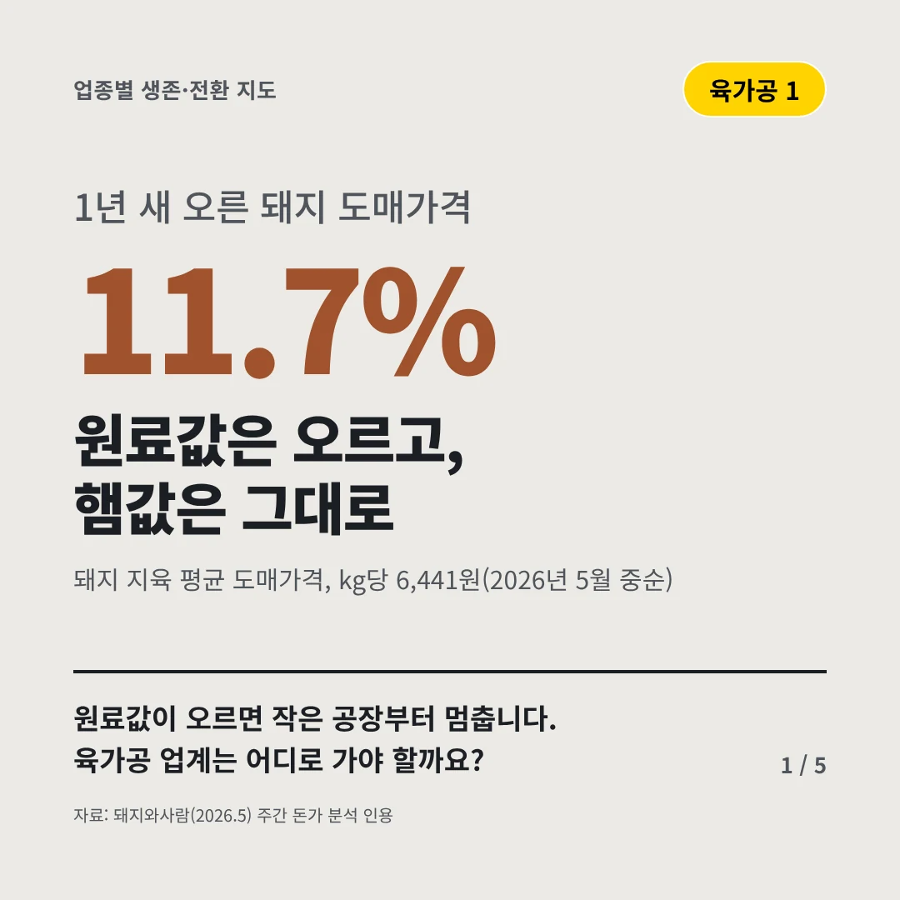
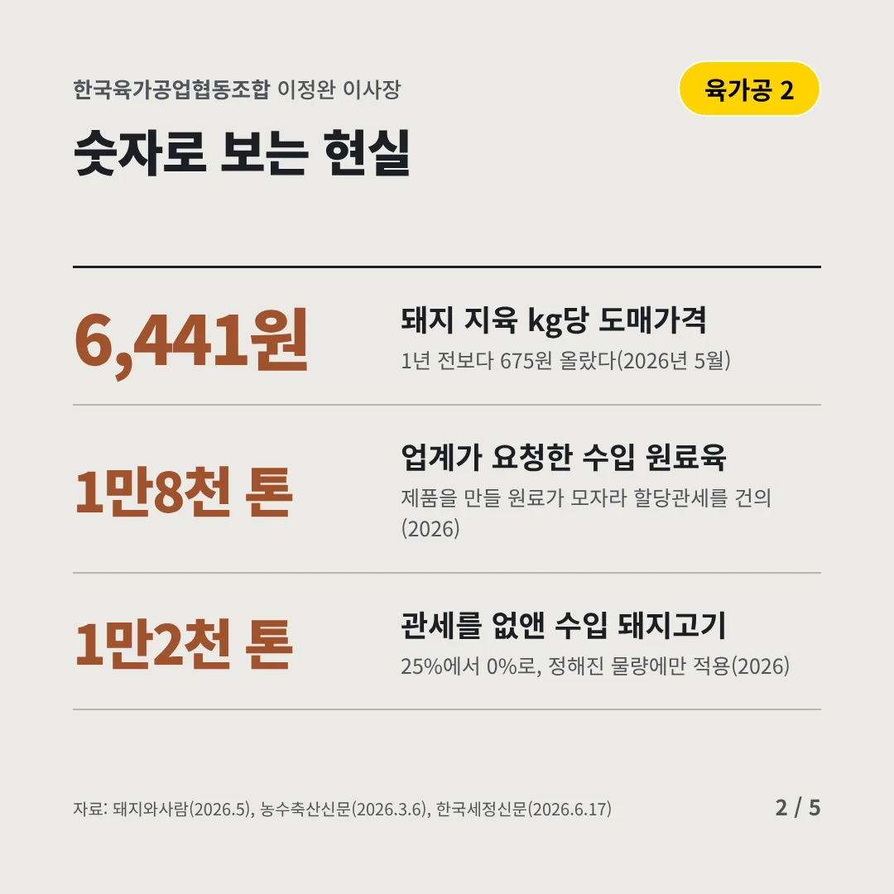
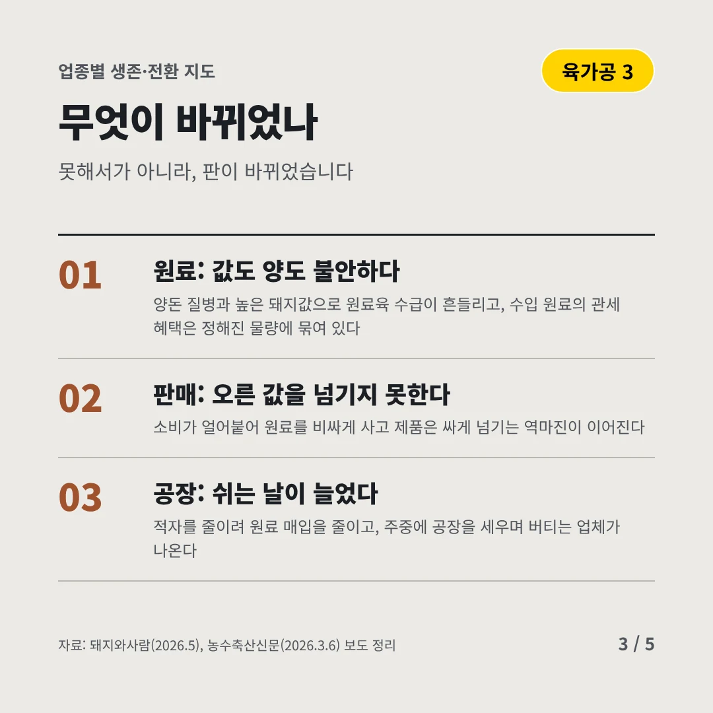
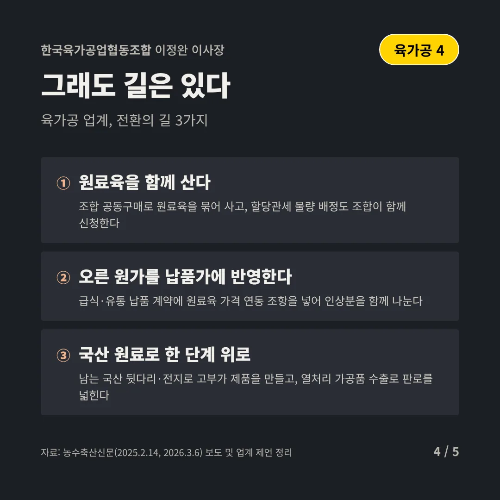
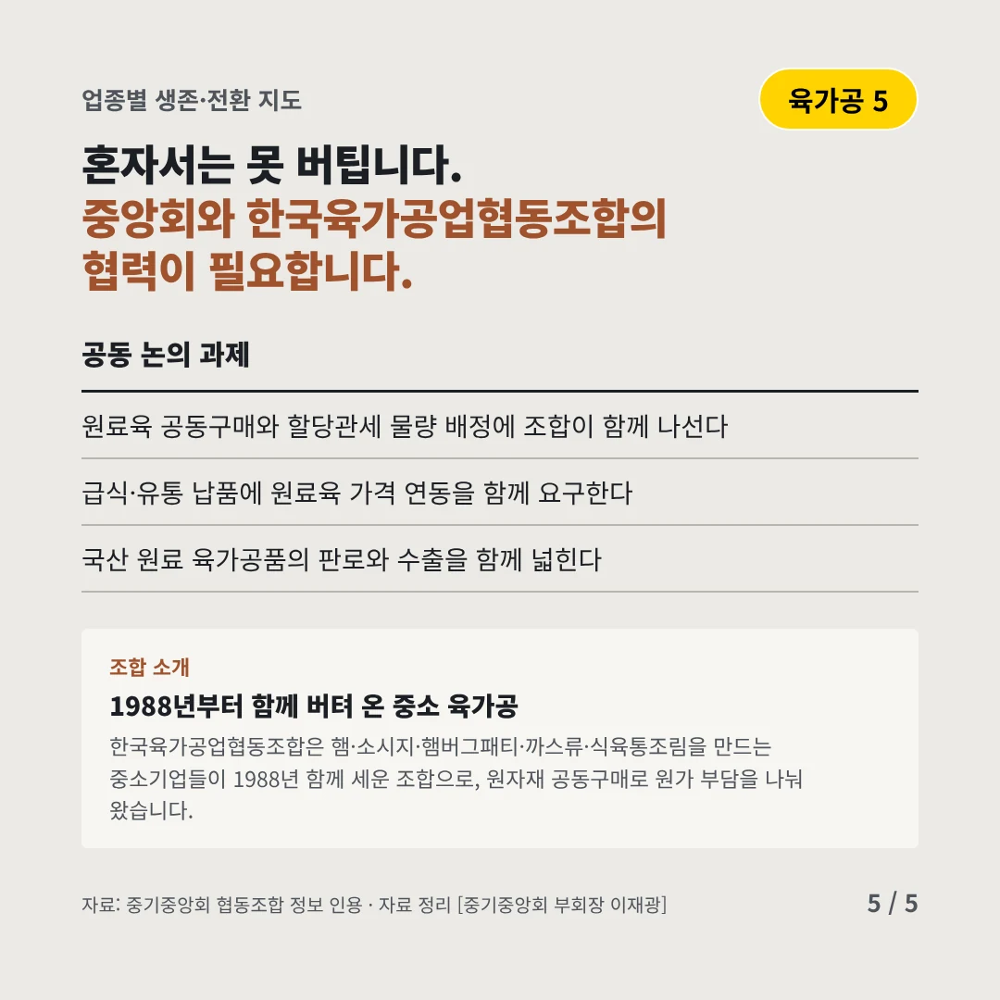
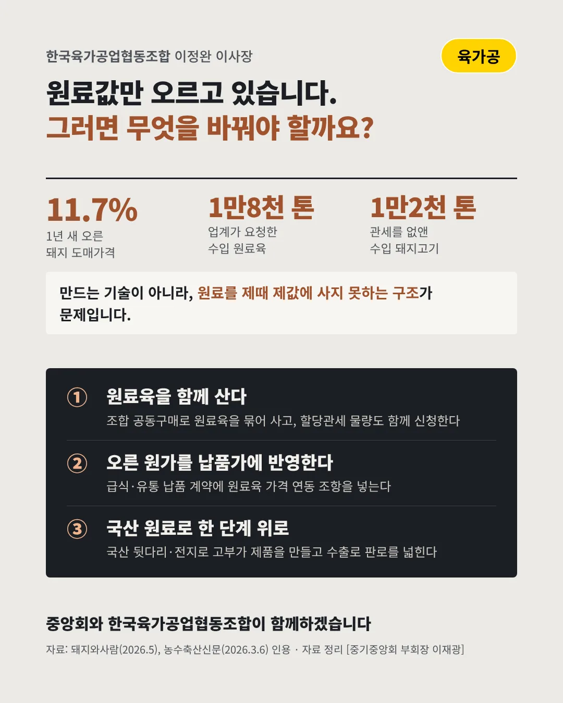

한국육가공업협동조합
원료값은 오르고, 햄값은 그대로
11.7% 1년 새 오른 돼지 도매가격






원료값이 오르면 작은 공장부터 멈춥니다. 육가공 업계는 어디로 가야 할까요?
숫자로 보는 현실
- 6,441원돼지 지육 kg당 도매가격1년 전보다 675원 올랐다(2026년 5월)
- 1만8천 톤업계가 요청한 수입 원료육제품을 만들 원료가 모자라 할당관세를 건의(2026)
- 1만2천 톤관세를 없앤 수입 돼지고기25%에서 0%로, 정해진 물량에만 적용(2026)
무엇이 바뀌었나
- 원료: 값도 양도 불안하다양돈 질병과 높은 돼지값으로 원료육 수급이 흔들리고, 수입 원료의 관세 혜택은 정해진 물량에 묶여 있다
- 판매: 오른 값을 넘기지 못한다소비가 얼어붙어 원료를 비싸게 사고 제품은 싸게 넘기는 역마진이 이어진다
- 공장: 쉬는 날이 늘었다적자를 줄이려 원료 매입을 줄이고, 주중에 공장을 세우며 버티는 업체가 나온다
그래도 길은 있다
- 원료육을 함께 산다조합 공동구매로 원료육을 묶어 사고, 할당관세 물량 배정도 조합이 함께 신청한다
- 오른 원가를 납품가에 반영한다급식·유통 납품 계약에 원료육 가격 연동 조항을 넣어 인상분을 함께 나눈다
- 국산 원료로 한 단계 위로남는 국산 뒷다리·전지로 고부가 제품을 만들고, 열처리 가공품 수출로 판로를 넓힌다
한 장 요약

조합 소개
한국육가공업협동조합은 햄·소시지·햄버그패티·까스류·식육통조림을 만드는 중소기업들이 1988년 함께 세운 조합으로, 원자재 공동구매로 원가 부담을 나눠 왔습니다.
자료: 돼지와사람(2026.5), 농수축산신문(2026.3.6), 한국세정신문(2026.6.17), 농수축산신문(2025.2.14, 2026.3.6)